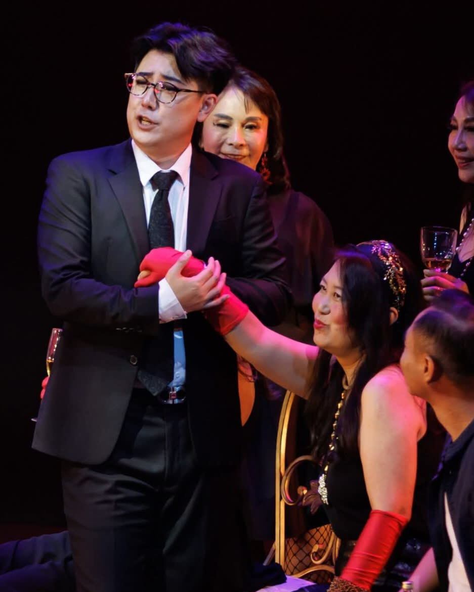

The Rake's Progress
- Composer
- Igor Stravinsky
- Company
- New Opera Singapore
Mona performed in New Opera Singapore's production of Stravinsky's opera.
Mona performs as a pianist, keyboardist, organist and accompanist, and on the opera stage.
Live performance at the piano.
Playing in a live band.
School chapel and church.
Accompanying instrumentalists in performance.
New Opera Singapore.
No upcoming dates yet. New performances will be listed here.
For performance enquiries, get in touch.

Mona performed in New Opera Singapore's production of Stravinsky's opera.
For questions about concerts or musical events, send Mona a message.
MonaMusic
Piano lessons with Mona Lim
Hello! Pick a topic and your message will open in WhatsApp, ready to send to Mona.
Hi Mona, I found MonaMusic online and I would like to ask about piano lessons for my child.
Preview: Mona's WhatsApp number hasn't been added yet, so this link is switched off.
Opens WhatsApp on your phone, or WhatsApp Desktop or WhatsApp Web on a computer.